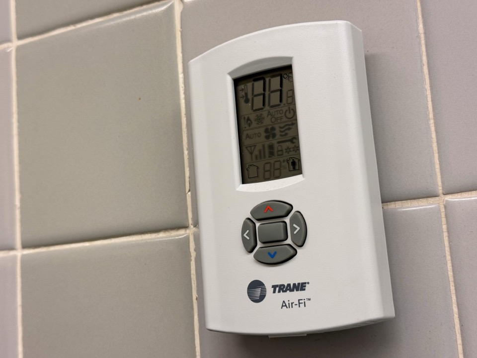

Mount, label and check a BMS room sensor
An installer has marked a room sensor position and fitted its cable. Confirm the position, make both labels match and prove the measurement before handing over.
Mock wall or scrap board, cardboard, marked-up paper plan, battery-powered drill or hand tools for the bench fixture, tape measure, label materials, short two-core cable, multimeter, thermometer and a passive room temperature sensor or loose thermistor. An institution’s installation procedures apply to actual walls and cabling.
Choose a position someone can find on the drawing
Mark the sensor symbol and identify the room, wall and device tag. Put its mock position where room air reaches the sensing slots. Check that the door swing, furniture and wall equipment leave access. Ask what the sensor is supposed to represent before deciding whether sunlight, supply-air jets, drafts or local heat will bias it.

Photo by Tony Webster, resized. Original photo · CC BY 2.0.
.jpg){kind=link}

Photo by Ansgar Hellwig. Original photo · CC BY-SA 2.0 de.

The Belimo 01RT-1L-0 is a worked example of a 10 kΩ Type II NTC room unit, labelled 10k2 on its product sheet. The same-looking housing can contain another element. Verify the complete suffix and the controller’s supported profile. Open the installation sheet for the cover, backplate, fixing points and S1/S2 terminals on this exact unit. Belimo model photo and datasheet · 01RT installation sheet.
Mount it, leave room for service and label both ends
- Put the base on a scrap-board mock wall. Mark fixing positions from the actual base and compare with the guide. Clamp the board, make the holes suited to the fixings, and secure the backplate without distorting it.
- Route a spare length of low-voltage cable to the mock controller end. Mark the drawing and put the same device tag on both ends before terminating. Leave enough access to identify and reopen the connector. Check that no bare copper shows beyond the terminal.
- Check that the cover fits flush and leaves airflow through the slots. Compare the actual device tag, cable route and terminal record before signing off. Follow the site’s cable and access procedure for real installation.

Photo by Dvortygirl, resized with labels added. Original photo · CC BY-SA 3.0.


Photo by Pierre75000, resized. Original photo · CC BY-SA 4.0.

Watch on YouTube · Watch where the cover releases, where the fixings go and how the cable enters the back. Compare the exact unit you have. How To: Install a Room Sensor and Room Operating Unit · Belimo.
Prove the wiring before trusting the screen
With both ends disconnected from equipment, short the cores together at the far end and measure loop resistance at the near end. It should be near the resistance expected for the cable plus the leads. Remove the short and verify the now open pair. Then connect the passive sensor and measure across its two terminals, with the controller still disconnected.
Read the temperature beside the sensor with a reference thermometer. Nominal values for the Belimo 10k2 element are 12.49 kΩ at 20 °C, 10.00 kΩ at 25 °C and 8.06 kΩ at 30 °C. Let the reading settle. Gentle warming should reduce an NTC’s resistance. A generic thermistor may follow another curve. Belimo resistance table.
| Observation | What to prove next |
|---|---|
| Open at the panel even with the far end shorted | Check both cable cores and the termination |
| Sensor resistance matches room temperature, but the connected front end differs | Verify tag, raw value, profile and screenshot timestamp |
| Resistance changes correctly, room reading consistently offsets | Compare a reference beside the sensor and check mounting, drafts and controller profile. |
| Sensor tests well at the base, but the cable pair reads shorted after removing the test link | Look for a pinched cable or stray strands with both ends isolated |
Leave an installation record
Save the marked plan, the two labels, a photo of the mounted base or assembled housing, terminal numbers and first measured reading at a recorded room temperature. Write which tool and fastener you used and which checks an installer or supervisor would need before the device is released for commissioning.
T18 · Sensor physics: how sensors turn the world into signals
T24 · Measurement loading, tolerance and datasheets
T34 · Control signals, PLC scans and independent proof